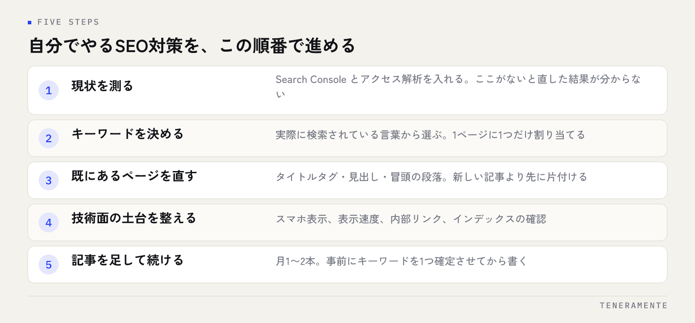

SEO対策を自分でやるやり方を探している方に、先に結論をお伝えします。SEO対策の中心にある作業は、外注しなくても自分でできます。難しいのは技術ではなく、手を付ける順番を間違えないことと、止めずに続けることです。この記事では、費用をかけずに始められる手順と、つまずきやすい場所を順に整理します。
📌 この記事の結論
SEO対策で差がつくのは特別な裏技ではなく、検索される言葉に合わせてページを直し、記事を足し続けることです。まずは自分で3か月同じ手順を回し、手が回らない部分だけを外に出す順番が、いちばん無理がありません。
01SEO対策は自分でできる。分かれ目は手順を知っているか
SEO対策（Search Engine Optimization）は、検索結果で自社のページが見つかりやすい状態を整える取り組みです。専用の有料ツールがなくても、Google Search Console と Google アナリティクスはどちらも無料で使えますし、ページの文章を直す作業は社内の人のほうが速く正確にできます。自社の商品やサービスをいちばん知っているのは書き手自身です。
それでも自分でやって成果が出ない例が多いのは、作業の順番が逆になっているからです。よくあるのは、ページの中身を直す前に被リンクを増やそうとしたり、検索されていない言葉に向けて記事を書き続けたりする形です。順番を間違えると、作業量に関係なく結果が動きません。
ですから最初に決めるのは施策の中身ではなく、担当と頻度です。誰が、週に何分使うのか。SEO対策は数か月単位で積み上がる取り組みなので、続かない計画を立てた時点で結果は決まってしまいます。
02自分でやるSEO対策の手順
全体像は次の5つです。上から順に進めてください。

先に用意するもの
Google Search Console の登録（サイトの所有権確認）と、アクセス解析の設置。この2つがないと、直した結果が分かりません。どちらも無料で、作業は初回だけです。
この5つのうち、時間がかかるのは2と3です。1は初回だけの作業で、4と5は月単位の習慣になります。地図検索側の進め方はMEO対策を自分でやる方法に別途まとめていますが、土台から順に片付けるという考え方は共通です。
03キーワードは検索されている言葉から選ぶ
自分でやるSEO対策でいちばん効くのが、この工程です。社内で使っている呼び方と、お客様が検索で打ち込む言葉は、しばしば違います。「業務システム」と社内で呼んでいるものを、探している人は「予約管理 ソフト」と打っているかもしれません。
選び方の基準は3つです。
- 実際に検索されている言葉か：Google の検索窓に打ったときに出る候補（サジェスト）、検索結果の下に出る「他のキーワード」、Search Console の検索クエリで確かめます
- その言葉で来た人に、渡せるものがあるか：検索数が多くても、自社が答えられない内容なら後回しにします
- 1ページに1つだけ割り当てているか：同じ言葉で複数のページを作ると、自社のページ同士で競合します
最初は、検索数の多い言葉より具体的で言葉数の多い検索から取るのが現実的です。「ホームページ制作」より「ホームページ制作 費用 名古屋」のほうが、書ける内容も明確になります。
04ページの直し方：タイトル・見出し・本文
キーワードが決まったら、既にあるページを直します。新しい記事を書くより先に、ここを片付けたほうが早く動きます。
タイトルタグは、そのページで最も重要な1行です。決めたキーワードを前半に自然に入れ、全角30文字前後にまとめます。同じタイトルが複数ページにあると、どのページを見せるべきかが判断されません。ディスクリプションは検索結果に出る説明文で、順位そのものより「開くかどうか」に効きます。
見出しは、h1 はページに1つ、その下を h2・h3 と段階的に使います。デザインの都合で大きく見せたい文字に見出しタグを使うのは避けてください。本文は、冒頭の段落で結論を先に書きます。検索した人は答えを探して来ているので、前置きが長いページは読まれる前に閉じられます。
キーワードを本文に何度も詰め込む書き方は、もう効きません。1回で伝わる文章のほうが、結果として評価されます。
05技術面で最低限そろえること
技術面は、専門の会社に頼まないと動かせない部分もありますが、自分で確かめて直せる範囲もあります。優先順位は次のとおりです。
- スマートフォンでの表示：文字が小さすぎないか、横スクロールが出ないか、ボタンが押せるか。実機で自分のサイトを一通り触ります
- 表示速度：PageSpeed Insights で測ります。多くの場合、画像の容量が原因です。撮ったままの写真をそのまま載せているページは、まずそこを圧縮します
- 内部リンク：関連する記事同士をつなぎます。これは文章を書ける人が自分でできる、いちばん効果の高い技術的作業です
- クロールとインデックス：Search Console の「ページ」の項目で、登録されていないページとその理由を確認します
触らないほうがよい範囲
サイト構造の大きな変更、URLの一括変更、リダイレクトの設定は、間違えると今ある評価を失います。ここは自分で試さず、制作した会社か専門の担当者に相談してください。
06よくある失敗と、続けるための頻度
自分でやるときにつまずく場所は、だいたい決まっています。
成果を1か月で判断してしまう。SEO対策は、直した内容が検索結果に反映されるまで時間がかかります。最低3か月は同じ手順を続けてから評価してください。
記事を増やすことが目的になる。検索されていない言葉の記事が100本あっても、流入は増えません。1本を書く前に、その言葉が検索されているかを必ず確かめます。
順位だけを見て一喜一憂する。見るべきは、Search Console の表示回数・クリック数・クリック率と、問い合わせの数です。順位は手段で、目的ではありません。
古いページを放置する。情報が古いページは、新しく書くより先に直したほうが効率がよい場合が多いです。料金や実績、サービス内容が変わっていないか、半年に1回は見直します。
続ける頻度は「毎日」でなくて構いません。続く頻度に落とすほうが積み上がります。目安は次のように決めておくと、迷わずに回せます。
| 作業 | 頻度の目安 | 確認に使うもの |
|---|---|---|
| 検索クエリの確認 | 月1回 | Search Console（検索パフォーマンス） |
| 既存ページの見直し | 月1回、1〜2ページ | タイトル・冒頭の段落・内部リンク |
| 新しい記事の追加 | 月1〜2本 | 事前にキーワードを1つ確定させる |
| 表示速度・スマホ表示 | 半年に1回 | PageSpeed Insights、実機での操作 |
| 料金や実績の記載 | 半年に1回 | 社内の最新情報との突き合わせ |
07よくある質問
SEO対策を自分でやるのに、有料ツールは必要ですか？
記事は何文字くらい書けばよいですか？
どこまで自分でやって、どこから外に出すべきですか？
08まとめ：まず3か月、同じ手順を回す
SEO対策を自分でやるやり方は、特別な知識より順番の問題です。現状を測り、検索されている言葉を選び、既にあるページを直し、技術面の土台を整え、それから記事を足す。この順番で3か月回せば、何が効いて何が効いていないかが自分の手元のデータで見えるようになります。
今日からできるのは3つです。Search Console を登録すること、いちばん見てほしいページのタイトルタグを見直すこと、そのページに関連記事への内部リンクを1本足すこと。費用の全体像を先に把握しておきたい場合はホームページ制作費用の相場も参考にしてください。
TENERAMENTEでは、ホームページ・LP制作を公開後の運用まで含めて設計し、自社で更新できる形で引き渡しています。自分で回してみたうえで足りない部分だけを補いたい、という段階からでも構いません。現状の確認からご一緒したい方はお問い合わせからご連絡ください。